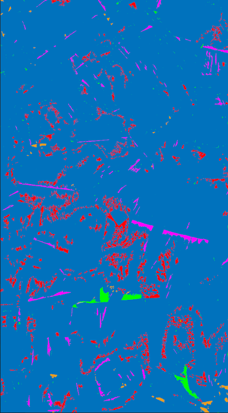
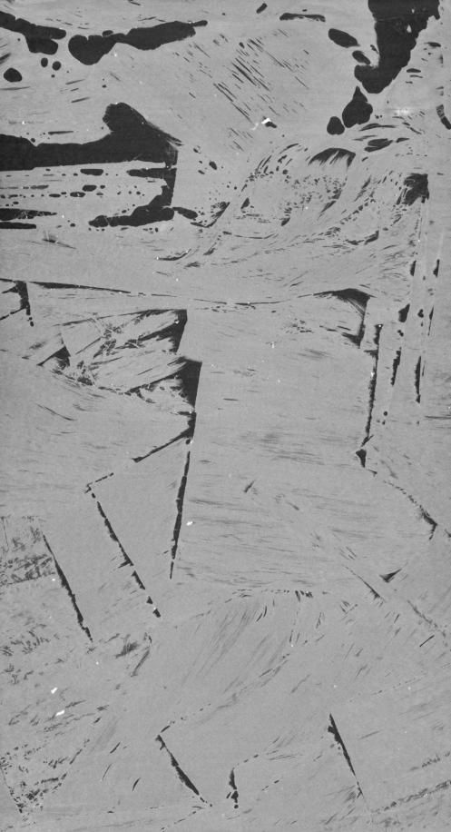
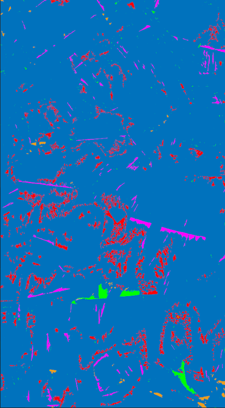
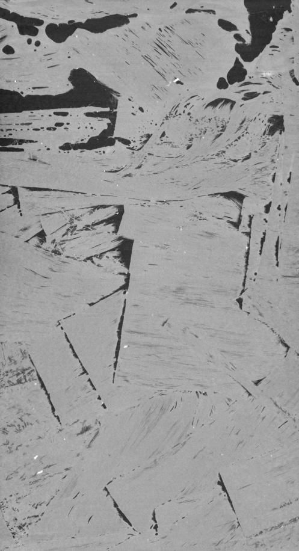
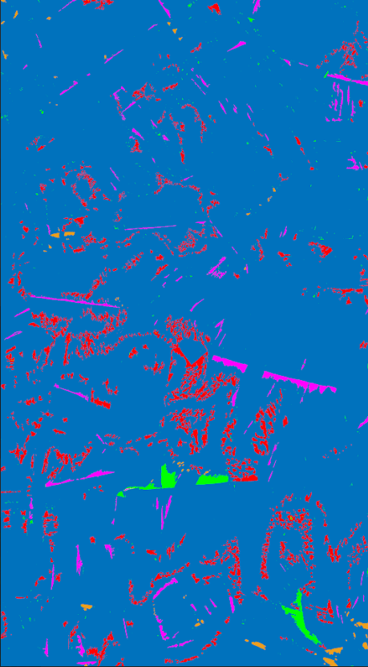
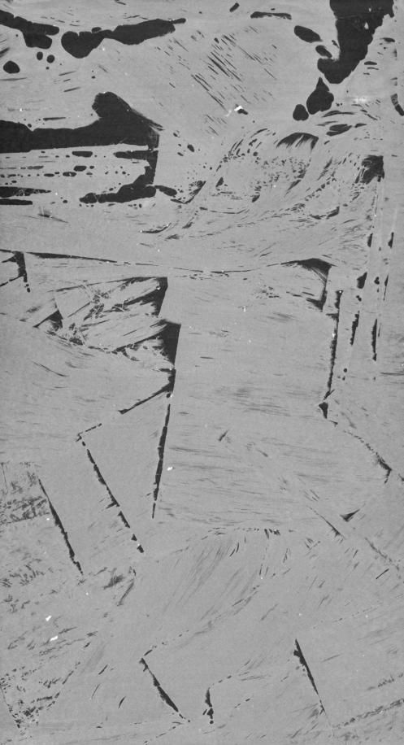

Micro-CT Analysis & Segmentation Results
 




Deep Learning & Micro-CT Segmentation (Amazon Collaboration)
Composite Oriented Strand Board (COSB) is a sustainable, high-performance aerospace material made from reused prepreg strands. However, its random, complex microstructure makes identifying internal defects—specifically voids—notoriously difficult using traditional thresholding methods. Manual inspection of Micro-CT scans is labor-intensive and prone to human error, creating a bottleneck for mass production quality assurance.
This research was conducted under the guidance of Dr. Bo Jin at the USC AME Department’s Composite Research Lab. In collaboration with Amazon, our goal was to automate this inspection process by developing a robust ground-truth pipeline for a Deep Learning segmentation model.
My primary focus was the critical Data Engineering phase: I curated and annotated a massive dataset of over 2,500 Micro-CT slices using LabelMe, applying pixel-level precision to distinguish between carbon fiber strands, resin-rich areas, and jagged voids. This high-fidelity dataset was used to train and validate a U-Net architecture with an EfficientNet-B0 backbone, designed to learn the morphological signatures of defects in noisy X-ray environments.
The resulting model achieved a Mean Intersection over Union (IoU) of 0.604, a dramatic improvement over baseline methods, proving that computer vision can effectively replace manual NDT (Non-Destructive Testing) workflows and enable scalable quality control for next-generation composites.


Interpreting X-ray Computed Tomography (Micro-CT) data to assess structural integrity without damaging the part.
Understanding that the quality of the dataset (Ground Truth) is just as critical as the model architecture in industrial ML applications.
Analyzing the microstructure of random-fiber composites and identifying failure-prone features like voids and resin-starved regions.
Bridging the gap between Material Science research and scalable Software Engineering (Amazon) requirements.